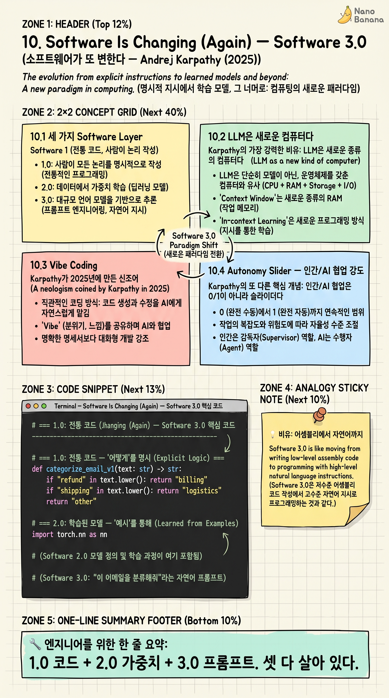

Software Is Changing (Again) — Software 3.0

🎯 학습 목표
- Software 1.0/2.0/3.0의 세 layer를 안다
- LLM을 OS·CPU·메모리 비유로 이해한다
- Vibe coding과 그 ROI·위험을 안다
- Autonomy slider — 인간/AI 협업 강도 조절을 설계한다
- Karpathy의 10년 사고 흐름이 어떻게 닫히는지 본다
Andrej Karpathy가 2025년 6월 'YC AI Startup School'에서 발표한 강연. 이 강연은 그가 2017년에 'Software 2.0'을 선언한 지 8년 만에 다시 패러다임 전환을 외친다.
핵심 명제: 우리는 'Software 3.0' 시대에 들어섰다. 1.0은 코드, 2.0은 가중치, 3.0은 프롬프트. 자연어로 LLM을 프로그래밍한다. 이 강연은 1장의 'Software 2.0'에서 시작한 이 코스를 자연스럽게 닫는다 — 같은 사람이 같은 사고 흐름으로 10년에 걸쳐 도달한 종착점이기 때문이다.
핵심 내용
10.1 세 가지 Software Layer
Software 1.0: 인간이 쓴 명시적 코드. Python, C++, Java. 컴파일러가 해석.
Software 2.0: 데이터로 학습된 신경망 가중치. 옵티마이저가 코드를 찾음. 1장에서 다뤘다.
Software 3.0: 자연어 프롬프트 + LLM. 프롬프트가 프로그램, LLM이 인터프리터.
Karpathy의 통찰: 이 세 layer는 대체가 아니라 stack이다. 같은 앱에 3.0(자연어 인터페이스) + 2.0(임베딩·분류 모델) + 1.0(전통 백엔드)이 동시에 존재한다. 엔지니어는 셋 다 잘 다뤄야 한다.
역사적 관점에서 보면 추상화 수준이 한 단계씩 올라가는 패턴이다 — 어셈블리 → 고수준 언어 → 신경망 → 자연어. 매번 더 많은 사람이 컴퓨터를 다룰 수 있게 된다.
10.2 LLM은 새로운 컴퓨터다
Karpathy의 가장 강력한 비유: LLM은 새로운 종류의 컴퓨터다.
CPU = LLM 자체: 추론을 실행하는 처리 단위.
RAM = Context window: 작업 메모리. 모든 게 여기 안에서 일어난다.
Disk = External memory (RAG·DB): context에 안 들어가는 큰 지식.
Bus = Tool calls: 외부 시스템과의 통신.
OS = Agent harness (Claude Code, Cursor): LLM 위에 얹은 운영 환경.
이 비유의 함의: LLM 시대 시스템 디자인은 'OS 디자인'의 새 분야다. context engineering = memory management. tool design = device driver. agent loop = scheduler.
이 시각으로 보면 8장 'Building Effective Agents'가 운영체제 설계 가이드 같은 위치다.
10.3 Vibe Coding
Karpathy가 2025년에 만든 신조어. '코드의 디테일을 보지 않고 자연어로 의도만 전달해 LLM에게 짜게 한다'는 새로운 개발 방식.
장점: 1.0 코딩보다 압도적으로 빠르다. 프로토타입·MVP·해커톤 수준의 결과를 분 단위로. 비전공자도 앱을 만들 수 있다.
위험: 코드의 미세한 정확성·보안·성능을 보장하기 어렵다. 'vibe'로 짜진 코드는 'vibe'로만 작동한다. 프로덕션엔 검증 layer가 필요.
적용 영역: (a) 빠른 탐색 — 가설을 코드로 확인 (b) 일회성 도구 — 자기만 쓸 스크립트 (c) UI 프로토타입. 핵심 인프라·금융·의료엔 위험.
Karpathy의 균형: vibe coding은 강력하지만 만능 아니다. McKinley의 innovation token 정신(5장)과 Beck의 tidy first 정신(6장)이 vibe coding 시대에 더 중요해진다.
10.4 Autonomy Slider — 인간/AI 협업 강도
Karpathy의 또 다른 핵심 개념: 인간/AI 협업은 0/1이 아니라 슬라이더다. 어디에 둘지 의식적으로 정해야 한다.
완전 인간(0%): 인간이 모든 줄을 쓴다. AI는 자동완성도 없다.
Co-pilot (25%): AI가 줄 단위 자동완성. 인간이 모든 결정.
Pair programming (50%): AI가 함수·블록 단위를 제안. 인간이 검토·수정.
Supervised agent (75%): AI가 작업 전체를 시도. 인간이 결과 리뷰·승인.
Autonomous agent (100%): AI가 종료까지 자율. 인간은 결과만 본다.
Karpathy: 위험·복잡도·검증 비용에 따라 슬라이더 위치를 다르게. 같은 코드베이스 안에서도 영역별로 다른 위치. UI 프로토타입은 100%, 결제 로직은 25%.
이 슬라이더는 Limoncelli의 게이지(2장)와 정확히 평행하다 — 자동화의 연속 스펙트럼. AI 시대 결정은 점이 아니라 슬라이더의 위치다.
10.5 이 코스의 종착점 — 10년의 사고
1장에서 Karpathy의 2017년 'Software 2.0'으로 시작한 이 코스가 같은 사람의 2025년 'Software 3.0'으로 닫힌다. 우연이 아니라 의도된 곡선이다.
Karpathy의 사고 흐름을 따라가면: 'how → what (1.0 → 2.0)'에서 'what → why (2.0 → 3.0)'로 추상화가 한 단계 더 올라갔다. 2.0에서 우리는 데이터(예시)를 줘서 함수를 발견시켰다. 3.0에서는 의도(자연어)를 줘서 동작을 발견시킨다.
이 코스의 다른 글들도 이 곡선 위에 위치한다: - Sutton의 Bitter Lesson(4장)과 Era of Experience(9장) → '왜 3.0이 가능한가'의 이론. - Limoncelli(2장), Ousterhout(3장), McKinley(5장), Beck(6장) → '3.0 시대에도 살아남는 시대불문 원칙'. - LLM 빌드(7장), Anthropic 가이드(8장) → '3.0 시대 실전 패턴'.
이 모든 글이 한 가지 메시지로 수렴한다: AI 시대 엔지니어의 일은 '추상화의 새 layer를 다루면서, 시대불문 원칙은 더 강하게 지키는 것'이다. 도구는 변하지만, 단순함·자동화·복잡도 관리·점진성·평가의 가치는 변하지 않는다. 오히려 도구가 강해질수록 이 원칙들의 ROI가 폭증한다.
💡 비유로 이해하기
1950년대 프로그래머는 천공카드에 0과 1을 찍었다. 1960년대 어셈블리가 나오며 추상화 한 단계 올라갔다. 1970년대 C, 1990년대 Python — 매번 한 단계씩.
각 단계마다 같은 일이 일어났다: (1) 더 많은 사람이 컴퓨터를 다룰 수 있게 됐다. (2) 기존 프로그래머는 '진짜 프로그래밍은 어셈블리(혹은 C)다'라며 새 추상화를 무시했다. (3) 새 추상화가 결국 표준이 됐다.
Software 3.0은 그 곡선의 다음 점이다. 자연어가 새 프로그래밍 언어다. '진짜 프로그래밍은 Python이다'라고 말하는 사람들은 1980년대에 '진짜는 C다'라고 했던 사람들과 같은 위치에 있다.
주의: 추상화가 한 단계 올라가도 아래 layer는 사라지지 않는다. 우리는 여전히 어셈블리를 쓴다 — 드물지만 결정적인 자리에서. 3.0 시대에도 1.0과 2.0은 사라지지 않는다. 다만 기본 layer가 한 단계 위로 옮겨갔을 뿐.
💻 코드 예시
같은 사용자 의도를 1.0 / 2.0 / 3.0 세 layer로 구현해서 stack의 의미를 본다.
# === 1.0: 전통 코드 — '어떻게'를 명시 ===
def categorize_email_v1(text: str) -> str:
if "refund" in text.lower(): return "billing"
if "shipping" in text.lower(): return "logistics"
return "other"
# === 2.0: 학습된 모델 — '예시'를 통해 ===
import torch.nn as nn
class EmailClassifierV2(nn.Module):
def __init__(self, vocab, dim=64, n_class=3):
super().__init__()
self.embed = nn.Embedding(vocab, dim)
self.fc = nn.Linear(dim, n_class)
def forward(self, x):
return self.fc(self.embed(x).mean(dim=1))
# 데이터셋이 진짜 코드. 학습으로 가중치를 발견.
# === 3.0: 프롬프트 — '의도'를 자연어로 ===
import anthropic
client = anthropic.Anthropic()
def categorize_email_v3(text: str) -> str:
msg = client.messages.create(
model="claude-opus-4-7",
max_tokens=20,
messages=[{"role": "user", "content":
f"이메일을 billing/logistics/other로 분류:\n{text}\n분류:"}],
)
return msg.content[0].text.strip()
# 자연어가 프로그램. LLM이 인터프리터.
# 새 카테고리 추가 → 프롬프트 한 줄 수정 (코드도 데이터셋도 안 건드림)
1.0: 'how'가 코드에 있다. 새 카테고리 추가 → if 추가. 2.0: 'what'(데이터)으로 학습. 새 카테고리 추가 → 라벨링·재학습. 3.0: 'why'(의도)를 자연어로. 새 카테고리 추가 → 프롬프트 문장 수정. 추상화 한 단계마다 변경의 노력이 한 자릿수씩 줄어든다. Karpathy의 10년 곡선이 이 한 페이지의 코드로 응축된다.
🏭 현업에서의 평가
✅ 시니어가 보는 것
- 1.0/2.0/3.0 stack을 명시적으로 식별하고 적재적소에 사용
- Vibe coding의 ROI와 위험을 영역별로 판단
- Autonomy slider를 의식적으로 설정 (영역별 다른 위치)
- Context engineering·tool design·agent harness를 OS 디자인 관점으로 접근
⚠️ 레드 플래그
- 'AI 코드는 위험하니까 다 거부'하는 정체된 시각
- 반대로 '모든 걸 vibe coding으로'의 무책임
- Slider 위치를 한 자리에 고정 (영역 무시)
- Context window를 '단순한 입력'으로만 봄
🎤 예상 인터뷰 질문
- 당신 코드베이스의 각 영역별 autonomy slider 위치를 정한다면?
- Vibe coding을 허용하는 영역과 금지하는 영역의 기준은?
- LLM을 컴퓨터로 본다면, 당신 시스템의 OS·드라이버·스케줄러는 무엇입니까?
✨ 핵심 요약
세 layer stack
1.0 코드 + 2.0 가중치 + 3.0 프롬프트. 셋 다 살아 있다.
LLM = 새 컴퓨터
Context = RAM, Tools = Bus, Agent harness = OS.
Vibe coding
강력하지만 영역 제한 필요. 핵심 인프라엔 부적합.
Autonomy slider
0~100% 연속. 영역별 다른 위치가 정상.
Context engineering
Memory management의 새 분야.
추상화 한 단계 상승
어셈블리 → 고수준 → 신경망 → 자연어.
10년 사고의 닫힘
Karpathy 2017 → 2025. 'how → what → why'.
변하지 않는 원칙
단순함·자동화·복잡도 관리. 도구가 강해질수록 더 중요.